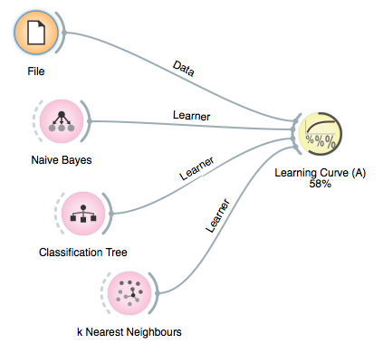
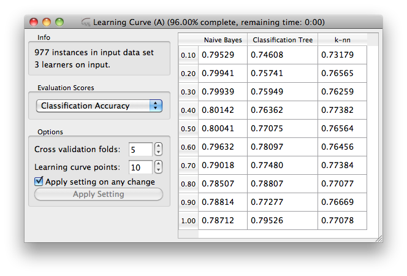

This is documentation for Orange 2.7. For the latest documentation, see Orange 3.
Progress Bar¶
Widgets, where there is any chance that their operation can be slower than split second, should report on the progress of their computation. For that purpose orange widgets use progress bar functions, to which they report progress in terms of per-cent completion of the task. The progress is then either on the icon of the widget in Orange Canvas
or in the title bar of the widget’s window. There, Orange also reports on the estimated time of completion of the task:
OWWidget has for this purpose a set of functions, which include:
- progressBarInit()¶
- progressBarSet(value)¶
- progressBarFinished()¶
where value is any number between 0 and 100. Sometimes, like it is the case for our widgets, we know about the number of iterations involved in computation, and we would only like to advance the progress bar for some constant at the end of the iteration. For this, we use ProgressBar class in OWGUI, and the code in the learning curve widget described in the previous lesson that does it is as follows
def getLearningCurve(self, learners):
pb = OWGUI.ProgressBar(self, iterations=self.steps*self.folds)
curve = Orange.evaluation.testing.learning_curve_n(
learners, self.data, folds=self.folds,
proportions=self.curvePoints, callback=pb.advance)
pb.finish()
return curve
ProgressBar class removes the need to define any special function to compute the percent of the task done and set the progress bar, and instead uses ProgressBar‘s method advance() for this purpose.